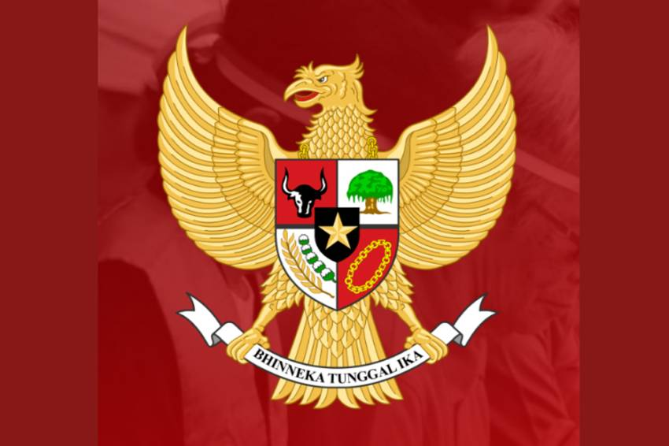

PPKN
Ppkn adalah subject di sekolah yang mengajarkan kami tentang pensesila 1945 konstitusi indonesia dan kewargaan Indonesia. Di ppkn di antara sekolah kami di bergi tugas tentang asal usul pancasila dan mengapa itu sangat penting untuk Indonesia, untuk menjawab pertanyaan tersebut saya belajar bahwa pancasila uud 1945 sangat penting bagi demokrasi di Indonesia karena tanpa pancasila Indonesia tidak bisa menjadi negara yang sejatra dan tanpa uud 1945 Indonesia tidak bakan ada aturan atura dan hukum untuk oranga yang berbuat jahat di Indonesia.
